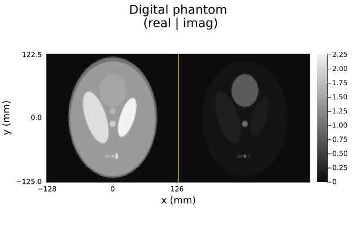
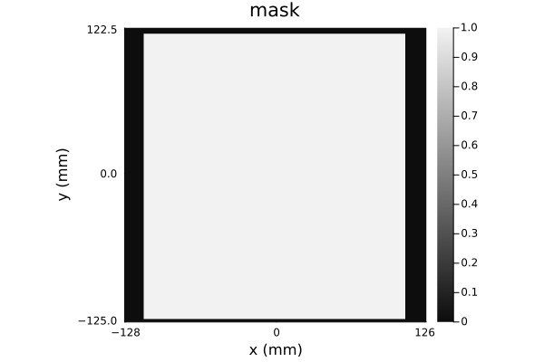
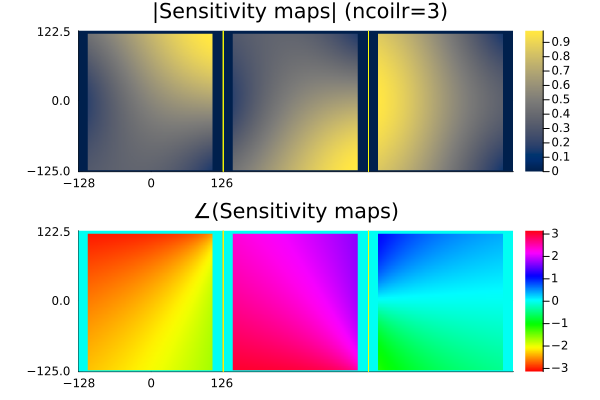
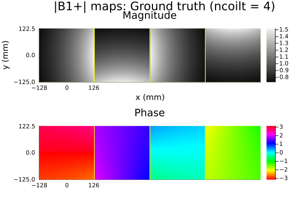
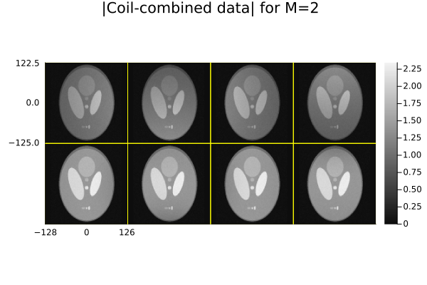
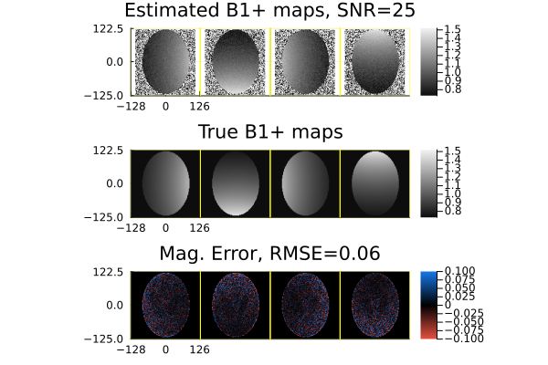

B1+ mapping
This page illustrates regularized B1+ map estimation from MRI images using the Julia package MRIFieldmaps.
This page comes from a single Julia file: 04-b1map.jl.
You can access the source code for such Julia documentation using the 'Edit on GitHub' link in the top right. You can view the corresponding notebook in nbviewer here: 04-b1map.ipynb, or open it in binder here: 04-b1map.ipynb.
Setup
Packages needed here.
using BlochSim: snr2sigma
using ImagePhantoms: ellipse_parameters, SheppLoganBrainWeb, ellipse
using ImagePhantoms: phantom
using MIRTjim: jim, prompt
using Random: seed!
using Unitful: mm
using Plots: RGB, cgrad, default
default(markerstrokecolor=:auto, label="")The following line is helpful when running this file as a script; this way it will prompt user to hit a key after each figure is displayed.
isinteractive() ? jim(:prompt, true) : prompt(:draw);Overview
The approach considered here is based on methods described in Ch. V of the 2011 PhD Thesis of Amanda Funai. That work in term is a significant extension of the 2007 ISBI paper "Regularized B1+ map estimation in MRI" by Amanda Funai, J A Fessler, W Grissom, D C Noll.
Note that B₁ has units of Tesla (magnetic field strength), but in this work we are really just estimating a scaling factor κ map that is the ratio of the apparent B₁ divided by the target B₁ value, i.e., if we prescribe a target 80° flip angle, but the actual flip is only 60° in a given voxel, then κ = 0.75 in that voxel. Everything called a "B1 map" below is really a "κ map".
Simulate data
For simplicity we consider simulated data here using a basic Shepp-Logan type of ellipse phantom and highly simplified transmit and receive coils.
Image geometry:
fovs = (256mm, 250mm)
nx, ny = (128, 100) .* 1
dx, dy = fovs ./ (nx,ny)
x = (-(nx÷2):(nx÷2-1)) * dx
y = (-(ny÷2):(ny÷2-1)) * dy;Define Shepp-Logan phantom object, with random complex phases per inner ellipse to make it a bit more realistic.
params = ellipse_parameters(SheppLoganBrainWeb() ; disjoint=true, fovs)
seed!(0)
phases = [1; rand(ComplexF32,9)] # random phases
params = [(p[1:5]..., phases[i]) for (i, p) in enumerate(params)]
oa = ellipse(params)
oversample = 3
image0 = phantom(x, y, oa, oversample)
ri_fun = z -> cat(dims = ndims(z)+1, real(z), imag(z))
p0 = jim(x, y, ri_fun(image0), "Digital phantom\n (real | imag)";
xlabel = "x", ylabel = "y", )
In practice, sensitivity maps are usually estimated only over portion of the image array, so we define a simple mask here to exercise this issue.
mask = trues(nx,ny)
mask[:,[1:1;end-1:end]] .= false # mask out outer border of maps
mask[[1:8;end-8:end],:] .= false
@assert mask .* image0 == image0
pmask = jim(x, y, mask, "mask"; xlabel="x", ylabel="y")
Sensitivity maps (coil receive)
Here we use 3 highly idealized receive coil sensitivity maps, roughly corresponding to the Biot-Savart law for an infinite thin wire, as a crude approximation of a birdcage coil.
"""
biot_savart_wire(x, y, wx, wy)
Compute response at `(x,y)` to wire at `(wx,wy)`
"""
function biot_savart_wire(x, y, wx, wy)
phase = cis(atan(y-wy, x-wx))
return oneunit(x) / sqrt(sum(abs2, (x-wx, y-wy))) * phase # 1/r falloff
end
function _rcv(wx, wy)
wire = (a,b) -> biot_savart_wire(a, b, wx, wy)
return wire.(x, y')
end
smap = stack(splat(_rcv), (
(maximum(x) + 8dx, maximum(y) + 8dy), # upper right corner
(maximum(x) + 8dx, minimum(y) - 8dy), # lower right corner
(minimum(x) - 20dx, 0dy), # middle left border
)
);Typical sensitivity map estimation methods normalize the maps so that the square-root of the sum of squares (SSoS) is unity:
ssos = sqrt.(sum(abs2, smap, dims=ndims(smap))) # SSoS
ssos = selectdim(ssos, ndims(smap), 1)
ncoilr = last(size(smap))
for ic in 1:ncoilr
tmp_s = selectdim(smap, ndims(smap), ic)
tmp_s ./= ssos # normalize
tmp_s[.!mask] .= 0 # apply mask
end
ps = jim(
jim(x, y, abs.(smap), " |Sensitivity maps| (ncoilr=$ncoilr)";
color=:cividis, ncol=ncoilr, prompt=false),
jim(x, y, angle.(smap), "∠(Sensitivity maps)";
color=:hsv, ncol=ncoilr, prompt=false,
clim=(-π,π), colorbar_ticks = ([-π, 0, π], ["-π", "0", "π"]),
),
layout = (2,1),
)
B1+ transmit maps: ground truth
ncoilt = 4
function _xmit(it::Int)
wx, wy = sincos(2π/ncoilt*it) .* 3maximum(x)
wire = (a,b) -> biot_savart_wire(a, b, wx, wy)
wire.(x, y')
end
tmp = map(_xmit, 1:ncoilt)
tmp = cat(dims=3, tmp...)
b1_true = tmp / abs(tmp[end÷2,end÷2,1]) # ≈1 at middle
p1 = jim(
jim(x, y, abs.(b1_true); ncol=ncoilt, title="Magnitude",
prompt=false, xlabel="x", ylabel="y"),
jim(x, y, angle.(b1_true); ncol=ncoilt, title="Phase", color=:hsv,
prompt=false, clim=(-π,π), colorbar_ticks = ([-π, 0, π], ["-π", "0", "π"])),
plot_title="|B1+| maps: Ground truth (ncoilt = $ncoilt)",
layout = (2,1),
)
One-at-a-time double angle measurement
α_target = π/4 # target flip angle
chi = [1; 2] * α_target
M = size(chi,1) # number of measurements
Hfun = sin # ideal model that ignores steady-state and slice-profile effects
Ffun(z) = sign(z) * Hfun(abs(z))
N = (nx, ny) # image dimensions
xtrue = reshape(chi, 1, 1, 1, M) .*
reshape(b1_true, N..., ncoilt, 1) # (N) × ncoilt × M
@show extrema(abs, xtrue)
ρtrue = image0 .* Ffun.(xtrue) # excited magnetization (N) × ncoilt × M
@show extrema(abs, ρtrue)
ytrue = reshape(smap, N..., 1, 1, ncoilr) .*
reshape(ρtrue, N..., ncoilt, M, 1); # (N) × ncoilt × M × ncoilrextrema(abs, xtrue) = (0.5726235815009828, 2.3876620871009444)
extrema(abs, ρtrue) = (0.0, 2.2730979921315777)Add noise
snr_db = 25 # SNR in dB
σ = snr2sigma(snr_db, ytrue) # noise std for the desired SNR
ymeas = ComplexF32.(ytrue) + Float32(σ) * randn(ComplexF32, size(ytrue));Receive coil complex coil combination, using ideal receive coil sensitivity maps for simplicity.
ycomb = conj(reshape(smap, N..., 1, 1, ncoilr)) .* ymeas
ycomb = sum(ycomb, dims = ndims(ycomb))
ycomb = reshape(ycomb, N..., ncoilt, M) # (N) × ncoilt × M
jim(x, y, abs.(ycomb); nrow=M, ncol=ncoilt,
title = "|Coil-combined data| for M=$M")
(The 2nd row of images is brighter because of the double angle.)
Estimate B1+ map for each transmit coil using basic double-angle method
tmp = abs.( 0.5 *
selectdim(ycomb, ndims(ycomb), 2) ./
selectdim(ycomb, ndims(ycomb), 1)
)
tmp = min.(tmp, 1)
b1_dam = acos.(tmp) / α_target; # note scaling!Examine B1 error only inside the head:
emask = image0 .!= 0
mag_err = abs.(b1_true) - abs.(b1_dam) # todo: mag error only?
mag_err .*= emask # show error in the head only
brmse = round(sqrt(sum(abs2, mag_err) / count(emask) / ncoilt), sigdigits=2)
clim = extrema(abs, b1_true)
RGB255(args...) = RGB((args ./ 255)...)
color = cgrad([RGB255(230, 80, 65), :black, RGB255(23, 120, 232)])
pdam = jim(
jim(x, y, b1_dam, "Estimated B1+ maps, SNR=$snr_db";
nrow=1, prompt=false, clim,),
jim(x, y, emask .* abs.(b1_true), "True B1+ maps";
nrow=1, prompt=false, clim),
jim(x, y, mag_err, "Mag. Error, RMSE=$brmse";
nrow=1, prompt=false, color, clim=(-1,1).*0.1),
layout = (3,1),
)
Regularized B1+ mapping
todo
Discussion
todo
This page was generated using Literate.jl.